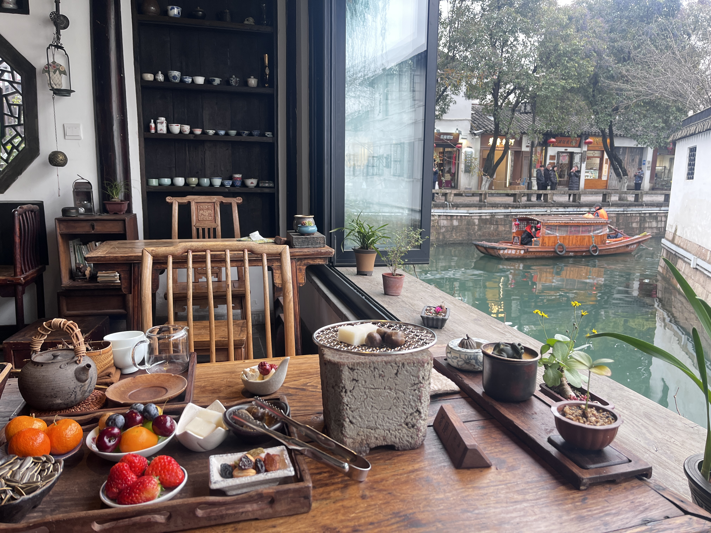
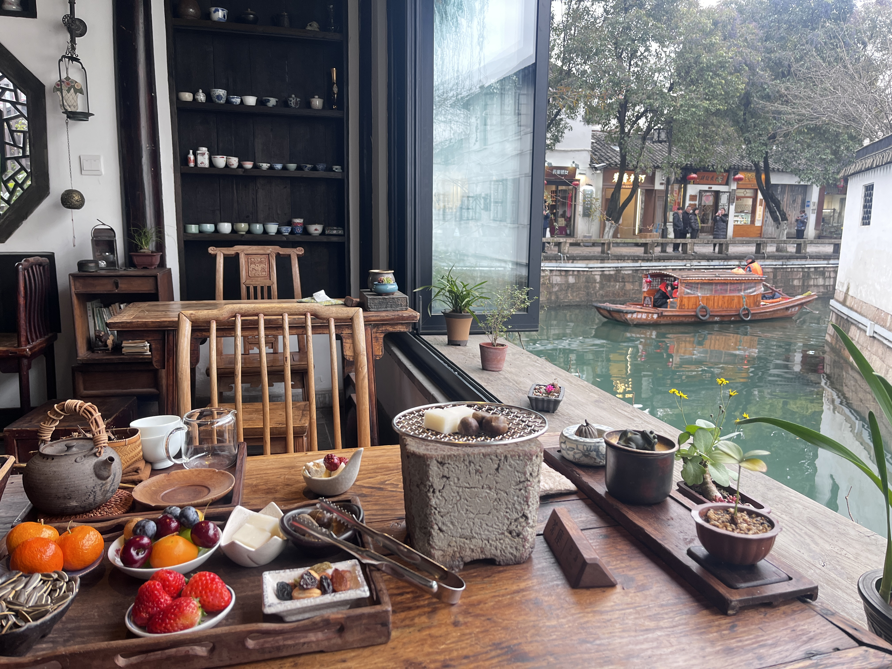
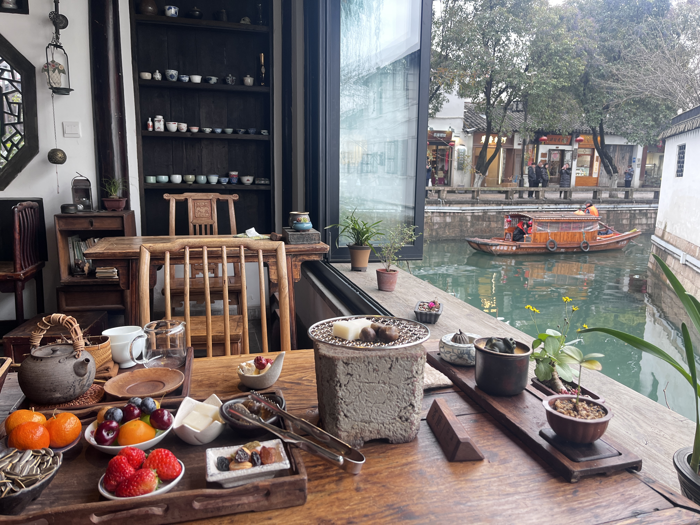

Personal Life
Beyond academia, I cherish moments of adventure and personal growth. Here are glimpses of my life:


 

Exploring Innovation, Technology, and Life
Graduation ceremony on Feb 7th. Photographs to be uploaded soon ✨
I’ve always been fascinated by how technology reshapes the world. My journey in computer science began with a deep curiosity about artificial intelligence, machine learning, and computer vision—powerful tools that are already shaping industries and everyday life. Through my academic and industrial experiences, I’ve built a strong foundation in these areas, but more importantly, I’ve realized that technology isn’t just about following existing paths. It’s about creating something new—contributing to the next wave of global innovation rather than merely adopting what’s already been established.
In the past few years, I’ve had the opportunity to bridge theory with real-world applications. My hands-on experience in industry led to the development of two national invention patents—an experience that taught me how applied computer science can transform industries. Yet, while this work was impactful, I knew it only scratched the surface. The most exciting innovations today, particularly in AI, aren’t just about application; they’re about pushing the boundaries of what’s possible. That’s the space I want to be in. I want to create solutions that don’t just optimize existing systems but redefine them entirely.
Research and innovation are filled with uncertainty. Following existing methods is often simpler, safer, and more cost-effective, but I believe that if I have the ability to contribute to the forefront of technology, then I should. The future of AI, automation, and intelligent systems isn’t something I want to passively observe—I want to shape it. I see my role as a contributor in the global wave of technological transformation, someone willing to take on the risks of research and development to bring something valuable into the world.
My honours thesis marked a defining moment in my academic journey. Focused on human motion synthesis, I developed a transformer-based autoencoder to generate realistic 3D human motion. By leveraging self-attention mechanisms and the SMPL model, my research tackled the challenge of synthesizing smooth and responsive motions from intuitive inputs, such as joystick gestures. Validated using the AMASS dataset, this research demonstrated the potential of real-time motion synthesis to enhance interactive experiences in gaming and virtual reality.
Through this experience, I learned the intricacies of deep learning architectures, dataset processing, and the rigorous cycle of research and validation. Beyond the technical aspects, it reinforced the importance of resilience—balancing experimentation, failure, and iteration to reach meaningful results.
When I first started my research, I had a structured mindset—I thought I had to read one paper per day, absorb as much information as possible, and that eventually, ideas would naturally emerge. But I quickly realized that research isn’t about efficiency in the way coursework is. It isn’t about checking off papers or completing assignments—it’s about allowing time and space for ideas to emerge. Some of my best insights didn’t come from reading faster, but from wondering while reading, letting my thoughts expand in unexpected directions. Research, at its core, is about curiosity and openness, not rigid goals.
One of the biggest lessons I learned was how to accept and even enjoy uncertainty. In coursework, there’s always a correct answer waiting to be found, but in research, there isn’t. If the answer was already known, there wouldn’t be research in the first place. At first, I struggled with this—weeks without visible progress felt frustrating. But over time, I realized that progress in research isn’t linear. It’s recursive. You get stuck, you find a way forward, you get stuck again, and you keep going.
I’ve learned to treat this process as something natural—like learning a language as a baby, or like breathing. The hard part isn’t solving a specific technical problem; it’s acknowledging how much I don’t know while still having faith in my ability to figure things out. That mindset shift changed everything. Whenever I’m stuck, I turn to Google, GitHub, my supervisor, senior PhD students, or even just take a break and let my subconscious work on it. If I’m stuck for more than three days, I seek help. No ego, just learning.
If coursework taught me structured problem-solving, research taught me something deeper: intuition and wisdom. I see failure differently now—not as a setback, but as a Bayesian update. Each failed idea doesn’t just tell me what doesn’t work; it refines my sense of what might. That’s also why I love reading about history, business, economics, and people’s lives—to train my intuition. I believe that intuition, when well-developed, leads to better decisions in both research and life.
Like J.K. Rowling said:
“Some failure in life is inevitable. It is impossible to live without failing at something, unless you live so cautiously that you might as well not have lived at all.”
To me, failure is as normal as breathing. And as long as I keep going, success will become just as normal.
I love uncertainty. I hate feeling stagnant. If everything was predictable, I would get bored. Research, for me, isn’t just about academia—it’s a mindset, a way of constantly asking questions about everything in life: What is this? Why is that? I don’t just want to consume knowledge; I want to create and contribute.
I also feel a deep sense of gratitude and responsibility. My supervisor, one of the top professors in our CV department, chose to take me as his only undergraduate honors student this year. He has been incredibly supportive without being pushy, and I feel privileged to have had this opportunity. And I believe that privilege comes with responsibility. As one US president said:
“To whom much is given, much is expected.”
This isn’t a burden—it’s a source of power. I feel fortunate to be in a position where I can contribute something meaningful.
This year, I worked harder than ever—not because I believe in no pain, no gain, but because my love for what I do outweighs the pain. Normally, I’m someone who is picky about food and values good sleep, but this year, I found myself eating oatmeal with water for lunch just to save time, or waking up in the middle of the night to write down an idea before it disappeared. Not because I had to, but because I wanted to. Because this journey is mine, by choice.
If I could give advice to my past self before starting this thesis, I’d simply say: Relax. Trust the process. Keep going.
During my industry experience, I had the opportunity to contribute to industrial digitalization at Jackson's Winery (Fujian) Co., Ltd., a National High-tech Enterprise and Chinese Time-Honored Brand. My work centered on optimizing traditional manufacturing processes through advanced computing technologies.
This experience shaped my understanding of the real-world applications of AI in industry. I saw firsthand how **computational intelligence** can drive efficiency in traditional manufacturing, and I realized the importance of bridging **cutting-edge research with practical implementation**.
Looking ahead, I aspire to leverage my dual expertise in research and industry to develop scalable AI-driven solutions that facilitate digital transformation across sectors. By combining my technical knowledge with practical experience, I aim to contribute to the future of the intelligent automation, robotics, and AI-driven optimization.
Beyond academia, I cherish moments of adventure and personal growth. Here are glimpses of my life:
